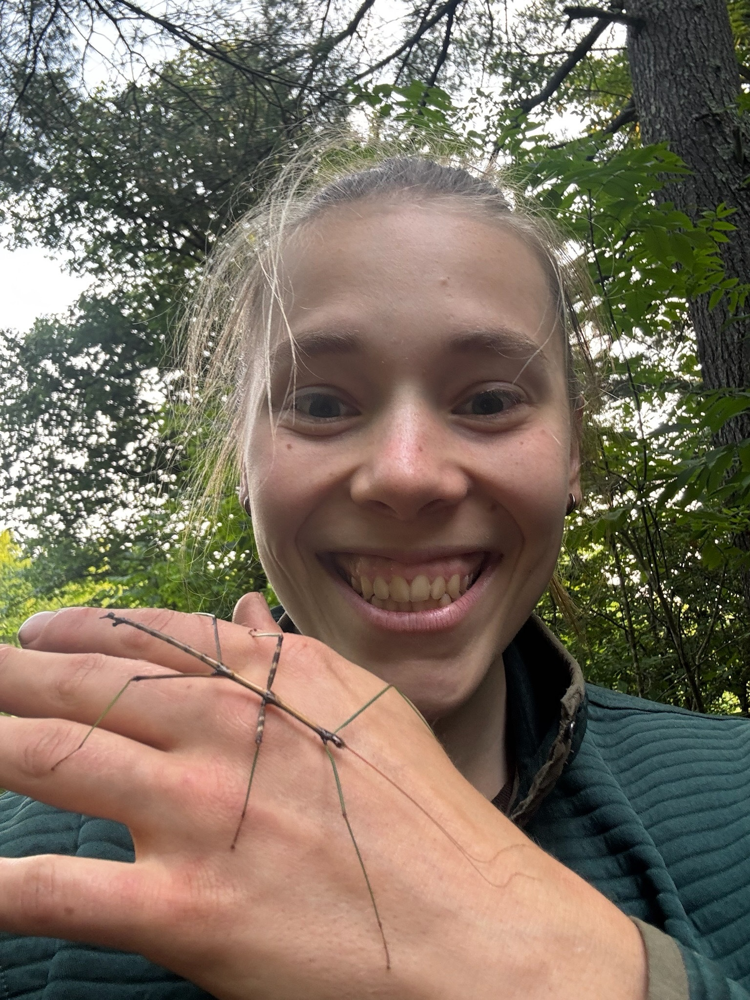

Fruit Gallery
A complete guide to all edible fruits on Stanford's campus
See what other foragers have found →A complete guide to all edible fruits on Stanford's campus
See what other foragers have found →Interesting edible plants around campus that aren't tied to a specific mapped tree
Fruit hauls, fun finds, and group photos shared by the community
The Stanford Fruit Map is a comprehensive guide to edible fruit trees growing on Stanford University's campus. This project aims to connect students, staff, and visitors with the incredible bounty of fresh, free fruit available throughout the year.

My name is Edie, and I'm an Biology undergraduate in the class of '27. I've always been a huge edible plant nerd, and upon discovering the loquat tree next to Alondra during my freshman year, I was hooked on finding the fruits on campus. This vibe-coded passion project is the culmination of years of exploration and learning about plants from around the world, all brought together to inhabit the gorgeous Stanford campus I feel so lucky to be a part of.
Click on any fruit icon to learn more about that tree, including when it fruits, how to identify ripeness, and usage suggestions. Use the seasonal filter to find what's available right now!
This map is a living document. If you notice trees that have been removed, find new fruit trees, or have additional information to share, use the "Report a Sighting" button on the map to let me know.
Yes! The fruit trees on campus are almost entirely unutilized and planted for decorative purposes, and the fruits would otherwise go to waste. Forage to your heart's content, but please be respectful and don't damage the trees.
This map is the result of years of wandering around campus, noticing new plants, and simply asking, "Can I eat that?" I'm continuously surprised by finding new edible plants, and it's almost certain that there are still more out there waiting to be discovered!
It depends on the fruit! Use the seasonal filter on the map to find what's ripe during different months. Because each tree is a unique individual, ripening times are not universal. For instance, the loquat on Lane B is the earliest ripening loquat I've found, becoming edible as early as the beginning of Spring quarter. The only way to learn of specific ripening times is through observation.
Check the fruit info pages for specific ripeness indicators. Generally, look for color changes and slight softness, or give the fruit a taste.
A bag or basket, and potentially a fruit picker for high branches (available at the Law School Library!).
Yes! Use the "Report a Sighting" button on the map if you notice trees have been removed or if you've found new fruit trees on campus.
Please send me an email — I'd love to hear about it!
From Stanford: We start with a recognition that Stanford sits on the ancestral land of the Muwekma Ohlone Tribe. This land is of great importance to the Ohlone people, and has been since time immemorial. Consistent with our values of community and diversity, we have a responsibility to acknowledge, honor and make visible the university’s relationship to Native peoples. Learn more about the tribe at muwekma.org.
Additionally, I want to note my appreciation for the rich ethnobotanical knowledge held by the Muwekma Ohlone people and other Indigenous communities. These people have known which plants are good to eat and why for generations, and I feel incredibly fortunate for a chance to partake in some of these endemic plant foods. Most of the campus fruits are not native to the CA Floristic Province, but many of the edible plants that grow more wildly around campus are, and have been used for millenia as both food and medicine.
Tree locations were collected through personal observation, community contributions, and verification over multiple seasons.
This map was built using Leaflet.js, MapTiler, and Claude.ai.
Starter photos for the Edible Plants section come from Wikimedia Commons, licensed under CC BY-SA 4.0:
Background photos on the About and Admin pages are free stock photos from Pexels.